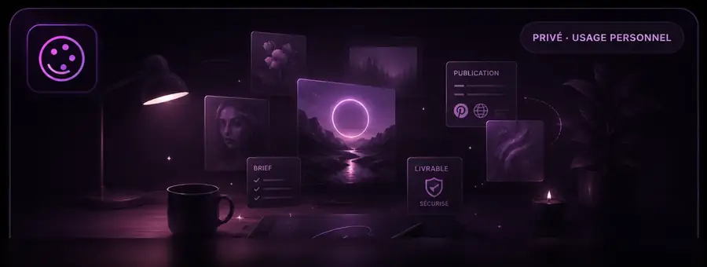

Structurer
Idée, style, ambiance, format, palette, sujet, contraintes et éléments interdits.
ATELIER 7S · PREMIER PRODUIT
Un studio pour transformer une idée en brief créatif exploitable, puis structurer tout le workflow jusqu’aux livrables, à Notion et à n8n.

Créer · sélectionner · finaliser · publierFREE
La version Free fonctionne entièrement dans le navigateur. Elle ne demande ni compte, ni serveur applicatif, ni clé API.
Idée, style, ambiance, format, palette, sujet, contraintes et éléments interdits.
Construction déterministe d’un prompt complet adapté au workflow créatif IA Art.
Copier le prompt ou le télécharger en fichier texte, sans qu’aucune donnée ne quitte le navigateur.
PRO · EN PRÉPARATION
La version Pro reprend l’application Docker existante et ajoute la couche produit nécessaire pour piloter les projets et automatiser le workflow.
Historique, duplication, statuts et versions de prompts.
Import des fichiers générés, galerie, contrôles et validation humaine.
Paquet ZIP complet conservé localement.
Création de la fiche projet et stockage des livrables via n8n.
Automation Pack nettoyé et reconnectable à l’environnement de l’utilisateur.
Docker, SQLite et sauvegardes du volume applicatif.
WORKFLOW
ESSAI IMMÉDIAT
Pas d’inscription. Tu saisis ton brief, tu récupères ton prompt, terminé.